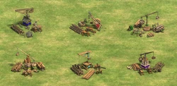
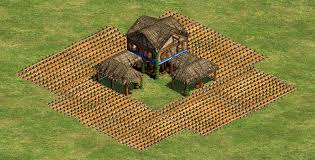
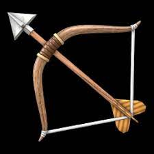
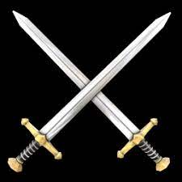

El age of empires 2 es un videojuego de estrategia en tiempo real ambientado en la Edad Media, el segundo de la saga Age of Empires y fue lanzado en 1999. es un videojuego de estrategia en tiempo real ambientado en la Edad Media, el segundo de la saga Age of Empires y fue lanzado en 1999. Desarrollado por Ensemble Studios y publicado por Microsoft Games para PC. Este juego esta desarrollado para Microsoft Windows y PlayStation 2.
El juego se basa en dos conceptos prinicipales una es la economia y otra la guerra.
La economia:consiste en construir las bases de la civilización; de esta manera se asegura el flujo de recursos a lo largo de la partida.
 La guerra:El segundo aspecto del juego, la guerra, consiste en conbatir contra los oponentes. Cada parte no puede sobrevir sin la otra ya que se necesita proteger a los aldeanos que suministran productos, y a su vez estos recursos son indispensables para crear un ejercito y una armada capaces de enfrentar al contrario.
 Cada parte no puede sobrevir sin la otra ya que se necesita proteger a los aldeanos que suministran productos, y a su vez estos recursos son indispensables para crear un ejercito y una armada capaces de enfrentar al contrario. La finalidad del juego es dominar al oponente para vencerlo, utilizando un ejercito y la economia, hay muchos tipos de ejercitos y maneras de llevar la economia, estrategias y civilizaciones.